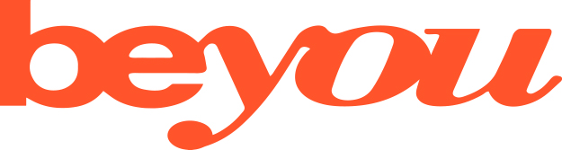
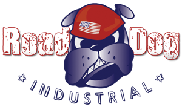

Projects

Be-you
Be-you
- This is a blog website I started as side project. I work on this mostly on the weekend. I created the logo and overall idea of the website. It’s something fun and it challenges me because it gets me out of comfort zone.
- I picked the free theme template I wanted to use and I designed how each page was laid out. I also worked with the graphic designer on these features. I also customized some of the code so the template will work the way I wanted.
- I put sitemaps into google, bing, and yahoo to optimize the SEO.
- I put Meta Tags in the Header Section of the website so when you search Google or any other search engines it becomes easier to find this Website/Business. It will have key words and phrases so that it will increase search engine optimization.
- Installed an Ajax Plug-in each page to track the customer or viewer clicks. These track the amount of time that somebody is on your Website. It will have key words and phrases so that it will increase search engine optimization.
- I installed Google analytic on every page of Website to track the customer or viewer clicks and it also shows how long somebody is on your Website. It will have key words and phrases so that it will increase search engine optimization.
- Creating Div’s so certain pages display specific content so I can add and remove Header images from different pages on the Website without having to place each image on each page.
New Age Technologies
- Lead developer for SEO using UX/UI.
- Responsible for driving organic traffic to their Website as the integral part of a SEO Project Plan for a 6000 page IT training/recruiting website.
- I put sitemaps into google, bing, and yahoo to optimize the SEO.
- I put Meta Tags in the Header Section of the website so when you search Google or any other search engines it becomes easier to find this Website/Business. It will have key words and phrases so that it will increase search engine optimization.
- Installed an Ajax Plug-in each page to track the customer or viewer clicks. These track the amount of time that somebody is on your Website. It will have key words and phrases so that it will increase search engine optimization.
- I installed Google analytic on every page of Website to track the customer or viewer clicks and it also shows how long somebody is on your Website. It will have key words and phrases so that it will increase search engine optimization.
- Assist team on best practices for SEO, design, page functions and implement team goals.

Road Dog Industrial
Road Dog Industrial
-
The Bullhorn database where on a rest API set up where you used tokenization. The token system was you had to login into Bullhorn and submit a query like:
You had 8-10 minutes to send this to their database so the database can go into the form and find the field and set-up the database accordingly.
Text-field {
Name: char(14);
Etc.
} - The other forms are electrically signed documents that are sent to the recruiters e-mail so they can print them out and send them to future skilled labor companies that want to hire certain type of laborers.
- I put sitemaps into google, bing, and yahoo to optimize the SEO.
- I put Meta Tags in the Header Section of the website so when you search Google or any other search engines it becomes easier to find this Website/Business. It will have key words and phrases so that it will increase search engine optimization.
- Installed an Ajax Plug-in each page to track the customer or viewer clicks. These track the amount of time that somebody is on your Website. It will have key words and phrases so that it will increase search engine optimization.
- I installed Google analytic on every page of Website to track the customer or viewer clicks and it also shows how long somebody is on your Website. It will have key words and phrases so that it will increase search engine optimization.
- Creating Div’s so certain pages display specific content so I can add and remove Header images from different pages on the Website without having to place each image on each page.
- I picked the theme template we used and I designed how each page was laid out. I also worked with the graphic designer on these features.
IAAMED
- This is an information website using the information the company provided to me from a brochure and pdf forms that both had to integrated into the website. We used adobe echo sign forms because the doctor wanted the patients to fill the forms out online so they could have them when the patient came to the office. It made the paperless process much better for the patient and doctor.
- I picked the free theme template I wanted to use and I designed how each page was laid out. I also worked with the graphic designer on these features. I also customized some of the code so the template will work the way I wanted.
- I put sitemaps into google, bing, and yahoo to optimize the SEO.
- I put Meta Tags in the Header Section of the website so when you search Google or any other search engines it becomes easier to find this Website/Business. It will have key words and phrases so that it will increase search engine optimization.
- Installed an Ajax Plug-in each page to track the customer or viewer clicks. These track the amount of time that somebody is on your Website. It will have key words and phrases so that it will increase search engine optimization.
- I installed Google analytic on every page of Website to track the customer or viewer clicks and it also shows how long somebody is on your Website. It will have key words and phrases so that it will increase search engine optimization.
- Creating Div’s so certain pages display specific content so I can add and remove Header images from different pages on the Website without having to place each image on each page.
- It only took me about one week from start to finish with this website.